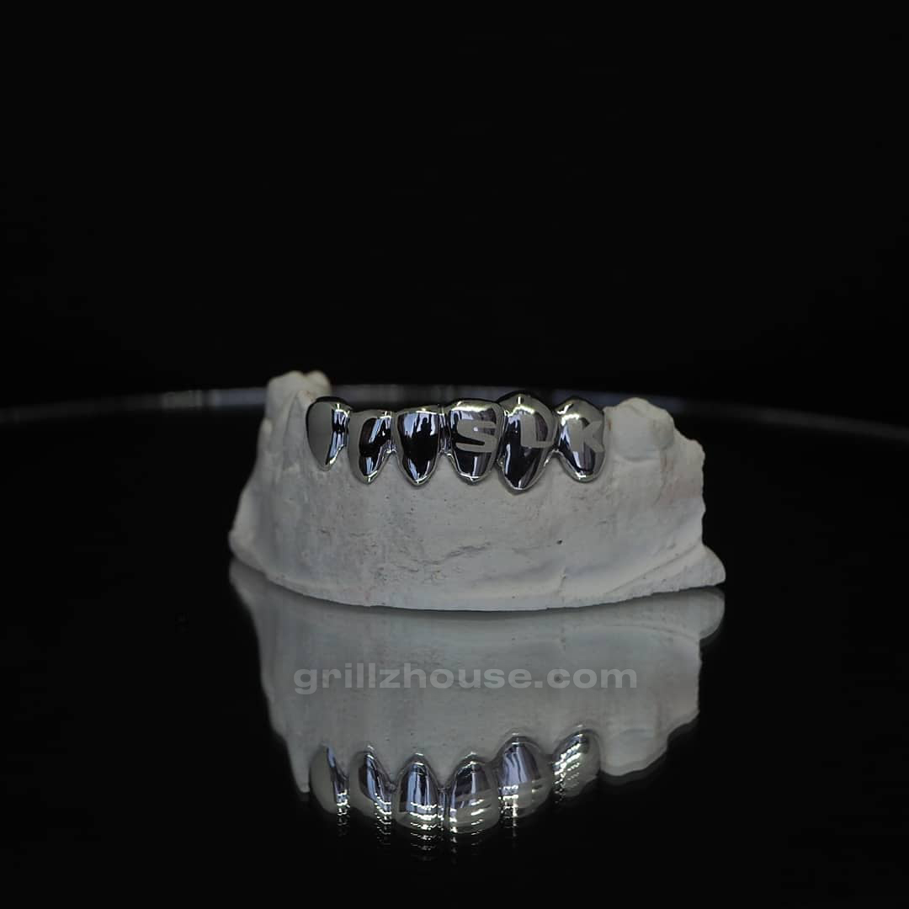
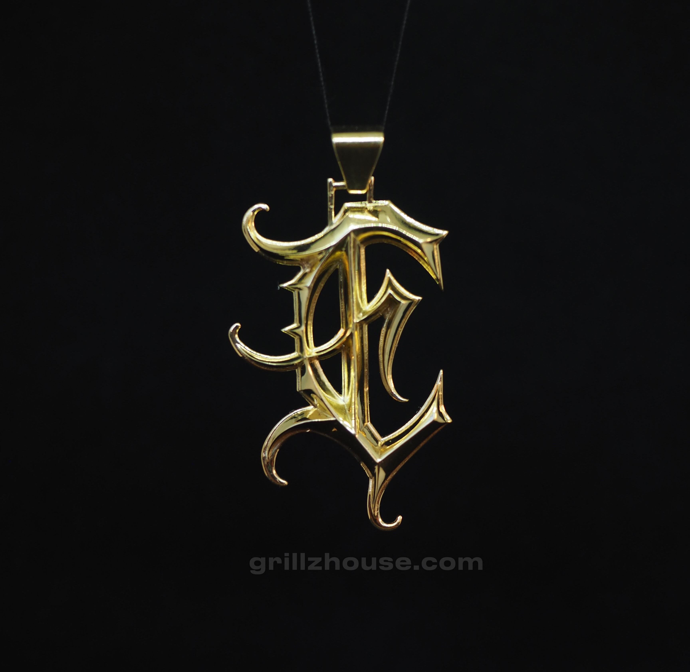
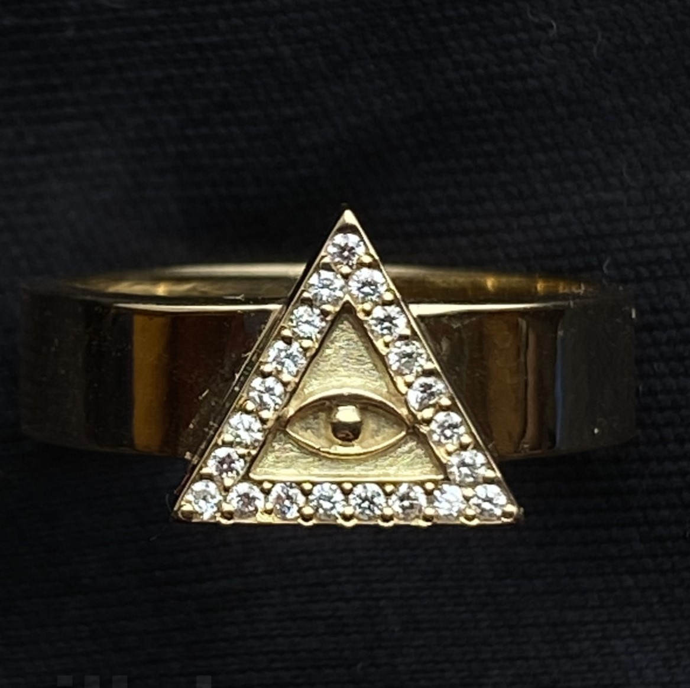

<div style="margin-top: 20px;">
    <div class="container">
        <div class="text-center">
            <h2 class="section-heading text-uppercase">Best Seller</h2>
        </div>
        <ul class="timeline">
            <li><a href="../../assets/img/1.jpg" target="_blank">
                    <div class="timeline-image"></div>
                </a>
                <div class="timeline-panel">
                    <div class="timeline-heading">
                        <h4>Grillz</h4>
                    </div>
                    <div class="timeline-body">
                        <p class="text-muted">Grillz, also known as dental grills, are decorative dental ornaments that are worn over the teeth. 
                            They are typically made of precious metals, such as gold or platinum, and can be adorned with diamonds or other gemstones. 
                            Grillz are a popular accessory in hip-hop culture, and are often associated with wealth and status. 
                            While some people wear permanent grillz that are affixed to their teeth, 
                            others prefer removable grillz that can be taken on and off as desired.</p>
                    </div>
                </div>
            </li>
            <li class="timeline-inverted">
                <a href="../../assets/img/2.jpg" target="_blank">
                    <div class="timeline-image"></div>
                </a>
                <div class="timeline-panel">
                    <div class="timeline-heading">
                        <h4>Pedants</h4>
                    </div>
                    <div class="timeline-body">
                        <p class="text-muted">Jewelry pendants are decorative pieces of jewelry that hang from a chain or cord around the neck. 
                            They come in a wide variety of styles, sizes, and materials, from delicate and understated to bold and dramatic. 
                            Pendants can be made from precious metals, such as gold or silver, or from other materials, such as glass, ceramic, or wood. 
                            They often feature gemstones, engravings, or other intricate details that make them unique and meaningful to the wearer. 
                            Pendants are a versatile accessory that can be dressed up or down, making them a popular choice for both casual and formal occasions.</p>
                    </div>
                </div>
            </li>
            <li>
                <a href="../../assets/img/3.jpg" target="_blank">
                    <div class="timeline-image"></div>
                </a>
                <div class="timeline-panel">
                    <div class="timeline-heading">
                        <h4>Cuban chain</h4>
                    </div>
                    <div class="timeline-body">
                        <p class="text-muted">The Cuban chain is a type of jewelry chain that is made up of interlocking links that are thick and wide. 
                            The links of a Cuban chain are typically flat and slightly twisted, which gives the chain a distinctive and eye-catching texture. 
                            Cuban chains are popular in both men's and women's jewelry, and can be made from a variety of materials, 
                            including gold, silver, and stainless steel. They are often worn alone as a statement piece, 
                            or layered with other chains for a more layered and dynamic look. Cuban chains have become 
                            a staple of hip-hop and streetwear fashion, and are a popular accessory among celebrities and influencers.</p>
                    </div>
                </div>
            </li>
            <li class="timeline-inverted">
                <a href="../../assets/img/4.jpg" target="_blank">
                    <div class="timeline-image"></div>
                </a>
                <div class="timeline-panel">
                    <div class="timeline-heading">
                        <h4>Rings</h4>
                    </div>
                    <div class="timeline-body">
                        <p class="text-muted">Jewelry rings are decorative pieces of jewelry that are worn around the finger. 
                            They can be made from a variety of materials, including gold, silver, platinum, and other metals, 
                            as well as adorned with gemstones, diamonds, and other precious stones. 
                            Rings are often used to symbolize important life events, such as engagements, weddings, or anniversaries. 
                            They come in a variety of styles, including simple bands, ornate cocktail rings, 
                            and personalized rings with initials or other designs. Rings are a popular accessory for both men and women, 
                            and can be dressed up or down for any occasion.</p>
                    </div>
                </div>
            </li>
            <li class="timeline-inverted">
                <div class="timeline-image">
                    <h4>
                        Be Part
                        <br />
                        Of Our
                        <br />
                        Grillz House Team
                    </h4>
                </div>
            </li>
        </ul>
    </div>
</div>